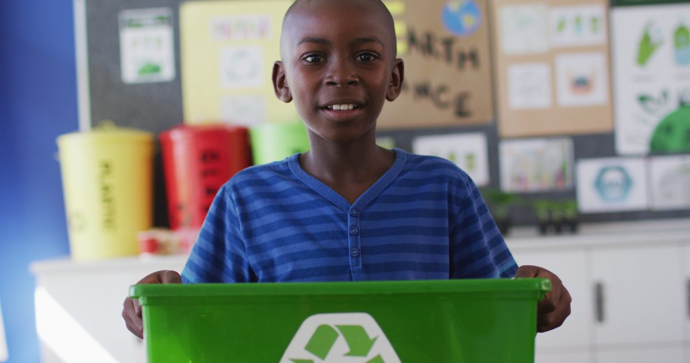

Welcome to the Achieving Educational Excellence dashboard.
The Achieving Educational Excellence: 2025–2030 Strategic Plan represents the shared vision of the North Carolina State Board of Education and the North Carolina Superintendent of Public Instruction — to have our public schools be the best in the nation! To be clear: to be the best is the only option. This dashboard is how we hold ourselves accountable to that commitment, sharing our progress openly with the people of North Carolina and every partner working with us.
Our Best in the Nation Measures are the statewide indicators we have chosen to track whether our public schools are, in fact, becoming the best in the United States by 2030. While we acknowledge our students are more than metrics, these measures tell us whether the eight transformative pillars of Achieving Educational Excellence are delivering for every child, in every community, across North Carolina.
The eight pillars of Achieving Educational Excellence are listed on the left-hand side of this dashboard. Click on any of the pillars to see more information on the 110 actions we are undertaking to make sure our public schools are the best in the nation by 2030.
Explore the Best in the Nation Measures
